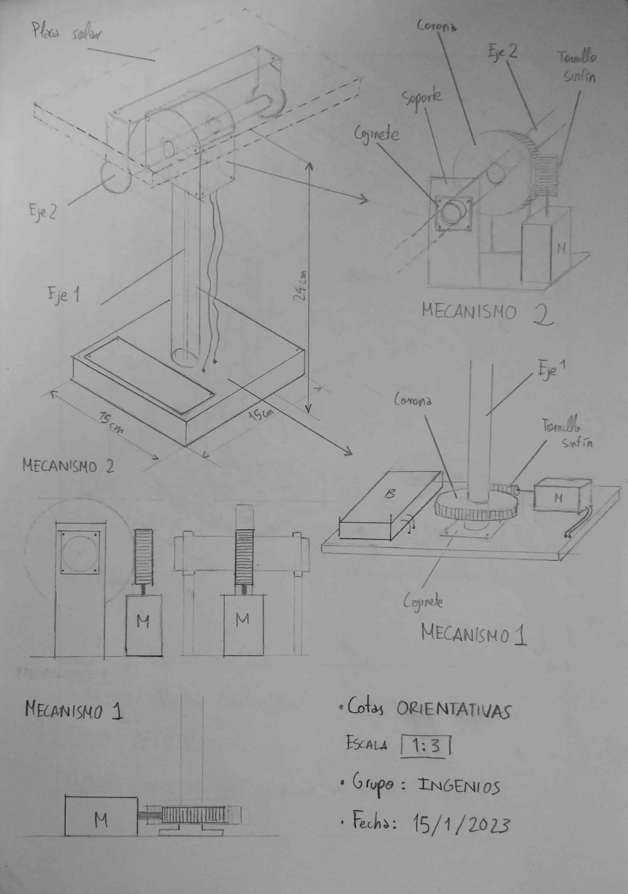
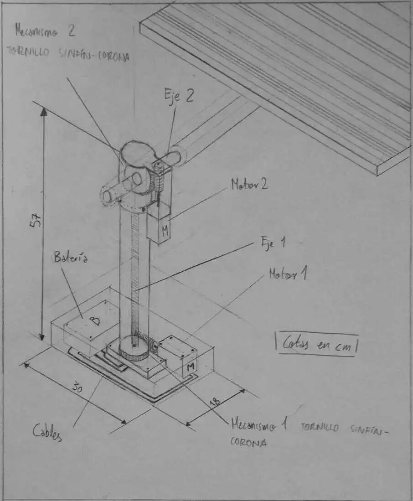
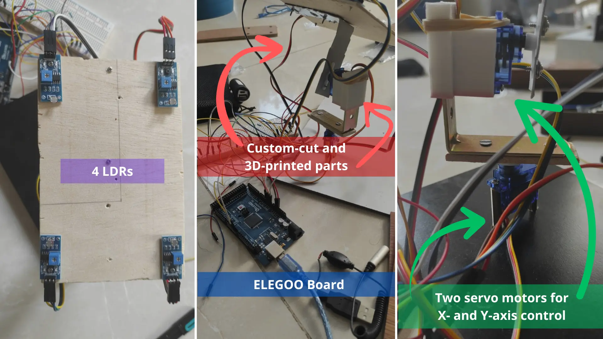

This project was built for a competition in Madrid about creating a solar tracker using sustainable and as many reusable materials as possible, except for the microcontroller board used to program it. It was created by a 4-member group.
Sustainable Design & Materials
We used scrap metal, leftover wood that was about to be thrown away, and even plastic bottles to create our own filament. This recycled filament was used to print the 3D piece that sustained one of our servomotors, making use of reusable materials as much as possible.
Below you can see early sketches of the design and how the mechanical components would move and look. Everything was mostly implemented from our ideal design, except that we had to readjust the second axis to rotate the panel, which required readjusting its position in our final design. Also, cable management was not implemented simply due to time constraints for submission.


How It Works
The entire system used 4 LDRs (Light Dependent Resistors) to check light increments in all four directions. This allowed the system to achieve maximum solar gain from the solar panel to charge a small battery we had included.

Two servo motors were controlled by the board based on the light intensity coming through the LDRs. All the logic was coded in C on an Elegoo board.
Outcome
I was in charge of programming the Elegoo board in C and helping design the 3D printed piece. If you want to check out some of my other 3D prints, head to my 3D Printing section.
The rest of the moving components were precisely cut and designed with leftover materials that were recycled or given a second life.
Unfortunately, we didn't win the competition, but we had a great time sharpening our collaboration, 3D design, mechanical design, and programming skills. Our mechanical design high school teacher gave us an honorable shoutout for best functional design in our class.